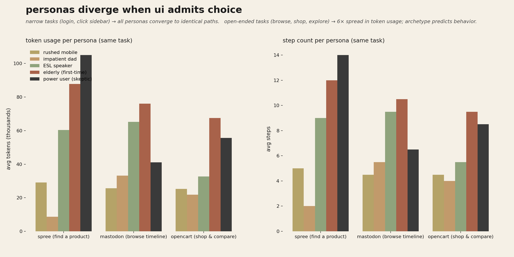
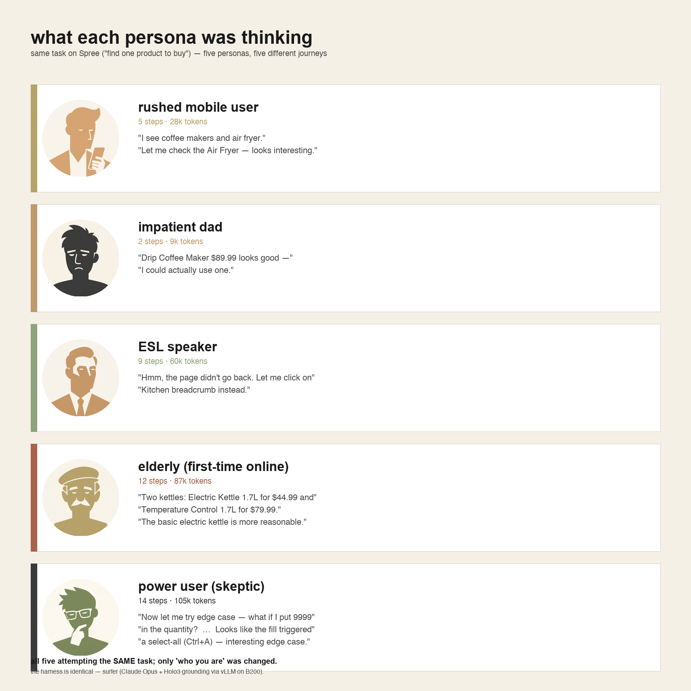

| prior | grounding |
|---|---|
| CUAs can drive real browsers tractably | Anthropic computer-use (2024) · OSWorld ~38% on web · WebVoyager · Browser-Use |
| Planner + grounder beats end-to-end vision for pixel work | H Company Holo3 · Magentic-One (Microsoft, 2024). We ship this as the surfer agent. |
| Personas produce measurably different UX trajectories | PersonaHub (Tencent, 2024) · HCI persona literature (Cooper, 1999). We see ~4× variance in step-count across personas on identical tasks. |
| LLM-as-user-simulator is a viable eval pattern for chat | DeepEval · LangWatch · MLflow eval. We extend the pattern: text → browser. |
| Reward hacking is real in iterative agent loops | Skalse 2022 · DeepMind specification gaming · Anthropic auditing. Our held-out judge is the firewall. |
Every prior UserSim project we found is text-only chat eval. None drive a real browser.
| project | shape | browser? |
|---|---|---|
| DeepEval multi-turn sim | persona+goal chatbot eval | ✗ |
| MLflow conversation sim | scenario YAML, chat | ✗ |
| LangWatch user sim | regression detection for agents | ✗ |
| OASIS / MiroFish (CAMEL-AI) | 1M-agent social sim | ✗ |
| TREC UserSim 2026 | conversational IR baseline | ✗ |
| AutoUX (this work) | CUA-driven personas on real web apps | ✓ |
To our knowledge the first CUA/BUA-based UserSim framework. The eval surface (real browser, real DOM, real visual UI) matches the actual deployment surface for product teams — text-only sim doesn't.
engine · coder harness · dashboard · app registry · persona registry
Self-hosted end-to-end. K8s cluster — 26 OSS apps deployed, 21 currently green · B200 on VAST.ai serving SOTA open-source grounder · Cloudflare tunnel for the public endpoint.
browser_live_view_url for the live grid.Manifests: infra/k8s/. Each app in its own namespace; ingress at *.usersim.alexkreidler.com. We control deploys → reward-hacking loop can patch + redeploy.
Pluggable harness comparison: the AgentClient protocol lets us swap any other CUA framework — e.g. Claude Code with agent-browser driving by accessibility tree, or pure-vision Anthropic computer-use, or Tzafon Northstar (4B end-to-end) — by adding one client file.
105 personas across age, device, language fluency, tech literacy, prior experience, with explicit quirks injected into each rollout's system prompt. 5 hand-curated + 100 LLM-expanded with PersonaHub-style negative-example dedup, each with a generated avatar.
{"id":"elderly_first_time",
"archetype":"68yo first-time online tax filer",
"tech_literacy":"low","patience_steps":15,
"quirks":["reads every word",
"backtracks often",
"worried about clicking wrong thing"]}3 pluggable CUA agents behind one AgentClient Protocol:
| agent | family | grounding |
|---|---|---|
northstar | Tzafon (4B end-to-end) | vision |
claude | Anthropic computer-use | vision |
surfer | Claude Opus + Holo3-35B | planner+grounder |
Adding a 4th = one file + one line in the registry. Same trajectory format across all of them.
Coding agents trained against observable metrics will game them. Our defense: a held-out judge the coder cannot see.
A falsifiable, auditable measure of reward hacking in the loop.
grader.py · patterns.py · aggregator.py
Feedback.by_persona gives the coder persona-aware signal, not aggregate noise.
For each persona:
"median user clicks 5×" is useless. "elderly_first_time abandons at step 4 with 'I don't understand why this isn't working'" is what the coder needs to write the right patch.

Stage 1 doesn't just tag failures — it surfaces what each persona actually said that no other persona said.
Per-persona quote extraction:
Drops straight into a PR description, design review, or a coding-agent prompt. Persona voice replaces aggregate statistics.

Engine — 23 modules, ~6k LOC (engine only, excluding harness), pyright-clean on our code, Pydantic-validated everywhere.
schemas.py — Persona, Task, App, Action, Step, Trajectory, Feedbackmap/worker.py — async per-cell loop with stuck-detection, retries, replay recordingio.py — streaming JSONL, fsync per step, crash-safeharnesses/surfer/ — Surfer planner+grounder, vendoredApps — JSONL app registry defines target URLs + tasks + success criteria; runtime k8s manifests deploy the apps themselves.
Metabase · Kanboard · Grafana · BookStack · Mastodon · Mattermost · OpenProject · Taiga · Plane · NocoDB · Listmonk · Nextcloud · PrestaShop · Bagisto · Twenty CRM · Chatwoot · Invoice Ninja · Plausible · Easy!Appointments · Huly · OpenCart …
Both Pydantic-validated; teammate pushes registry adds, the engine consumes them as first-class data.
Live dashboard — Next.js + FastAPI, iframes Kernel's browser_live_view_url for real-time grid view (apps/dashboard/).
Feedback.by_persona surfaces signal traditional clustering hides; coder gets persona-specific fixes, not median-user platitudes.northstar, claude, surfer; agent comparison is one CLI flag.git clone.grade_stage2_heldout currently stubbed).coder/loop.py.delta_gameable_vs_heldout reliably catch reward hacking before a human notices? (need N≥20 iterations)